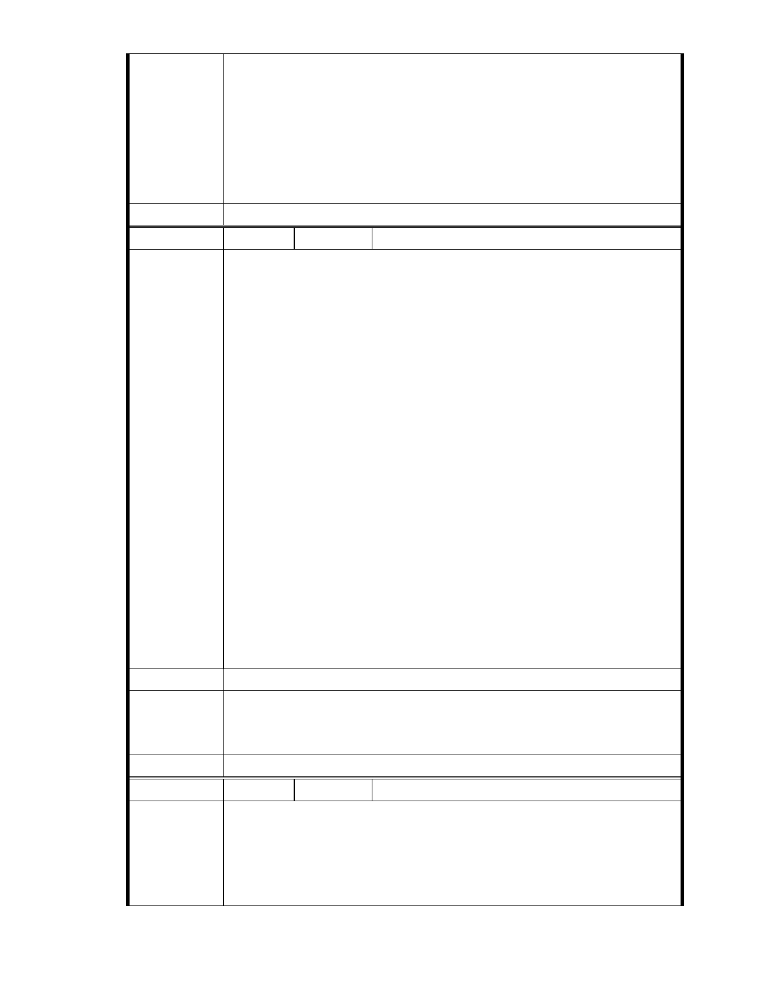

市府說明
委員會決議
一、本案申請範圍於慈濟購得前已遭非法填土，實不具保護區之功能，
今申請單位欲興辦社會福利事業，故依法辦理都市計畫變程序；目
前申請方案較先前方案已大幅降低開發強度、調整使用項目並承諾
大面積滯洪設施等回饋事項，顯示申請單位欲改善現況之誠意。
二、相關陳情意見將納入本案審查人民意見，依法定程序辦理。
三、後續審理程序將要求申請人加強與在地區民、社會大眾，就基地現
況、規劃方案及環境助益作為等方面加強溝通。
同編號 1。
編
號 90
陳情人 王淑敏（中國國民黨中央政策委員會函轉）
投書主旨：別縱容慈濟，北市府破壞內湖美好山林
投書內容：主席您好 :
辛苦了，這次選的很危險。
內湖保護區本來就是原始林公園，因為規定嚴格，很難開發使用，價
格更低到沒話說，但如果北市府縱容讓慈濟先變更地目再蓋〝宗教志
業大樓〞， 那以後是不是國家公園保護區是不是也都可以依此例，變
更土地分區蓋 " 上人紀念館 "??? 昨天聽到北市府都發局官派都委
陳情理由
大聲急呼，" 慈濟保護區蓋志業大樓是調和經濟發展裡非常重要的一
股穩定力量 " 真的是一整個傻眼 ...是不是因為他也是功德會的成
員呀…都不用避嫌 ??? 北市府公務員居然 " 公開 " 帶頭違法圖利
特定團體，這樣荒唐的事，您應該請營建署、環保署、水利署去關心
指導地方 ??
團隊裡不應該讓特定團體私自開後門走後路，這樣真的是很難堪。
2012 我們要先自己上緊發條，自己盯緊一點，真的不要再讓團隊裡的
人再出錯了 ...
建議辦法
一、本案已進入都市計畫法定程序，後續將依都市計畫委員會審定內容
市府說明
為準。
二、相關陳情意見將納入本案審查人民意見，依法定程序辦理。
委 員 會 決 議 同編號 1。
編
號 91
陳情人 joyce（中國國民黨中央政策委員會函轉）
投書主旨：內湖居民自主組成的「內湖保護區守護聯盟」
投書內容：內湖居民自主組成的「內湖保護區守護聯盟 」不惜籌募 20
陳情理由
多萬，於蘋果日報登出半版廣告，以「請慈濟手下留情放過保護區
吧 ! 」斗大標題，欲喚起大眾對慈濟內湖墓地保護區變更案之關注，
- 78 -